independent multimuse roleplaying blog
characters and lore based on the world of darkness

Dice rules

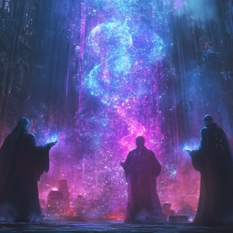
After more than 10 years of experience on this website, I have come to the conclusion that I am the maker of my own experience and that written roleplay can only entertain me so much before I bore myself.
So, what am I doing about it?
Throwing some dice, of course!
So, what am I doing about it?
Throwing some dice, of course!
You probably won't understand it, and that's okay. Why am I making things harder on myself than I should? Who throws dice in Tumblr RP? Yeah, I know. It sounds weird. But let me explain: my recent experience as a dice-and-paper roleplayer has led me to believe that leaving certain choices—especially those that can alter the plot—to the roll of a die can be quite fun.
Written roleplay offers few obstacles: if you want something to happen, it happens. I have seen RP helpers suggesting skipping the easy parts and even soft godmodding to advance the story, because it's easier. And they're not wrong—it is. But it also offers few rewards, because there are no obstacles pushing back. Things happen out of your will. And also, since most muses and plots are representations of the players' fantasies, there's rarely a missed shot or grave mistakes that can take the story somewhere else. I don't blame them—who fantasizes about losing?
But as RuPaul would say, "Losing is the new winning," and I am nothing but a creative thinker who will solve this issue for himself. I believe that by facing an unexpected outcome, the writer is forced to come up with creative solutions they probably didn't consider in the first place. I have seen this over the past few years during my tabletop roleplaying. Some of the solutions have been creative, some disastrous, and some so surprisingly fun that they’ve become memes within our group of friends.
I want to have that experience in this blog as well. And I want you, my fellow partner, to experience it too.
So, with that in mind, I have crafted these rules for both character creation and character action. Please take a look if you want to understand what those weird symbols or things are that appear at the bottom of some of my replies.
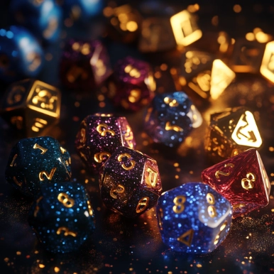
Cortex Prime
This blog will be using the dice-throwing rules for Cortex Prime. Its modularity and the fact that it is very easy to use for dramatic purposes grant me the opportunity to play in a way that supports the story—because that is how Cortex Prime was originally designed: to represent the stories we see on TV and in movies. There is also the added benefit that most of the rules are available online.
How does it work?
In the Cortex Prime modules, all Traits are divided into categories from 1 to 5. These categories are represented by the usual five dice found in any standard dice set. Respectively, they go from D4, D6, D8, D10, and D12.


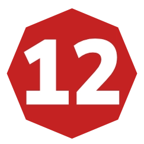
Normally, dice categories are also accompanied by Plot Points, which help to keep the story going and allow the player to alter the story. However, given that this effort is only undertaken by me and my other writing partner will probably not be using dice throws, I will refrain from using Plot Points at this time.
How many dice you throw?
More often than not, when faced with a task that could alter the thread, I will be rolling dice. Almost all dice rolls will be assembled with the following Traits:
- The dice representing a Distinction, which is always a D8.
- The dice representing the character's Attributes.
- The cice representing the character's Skills.
Roll and Keep
At every roll I will keep two dice from the roll, where I will sum their results to compare with the difficulty.
While the book has different mechanics for checking the Victory and Defeat conditions (because these are used to keep the pace of the game), I will be using the suggested standard difficulty mod, which goes as follows:
- Very easy tasks have a difficulty of 3.
- Easy tasks have a difficulty of 7.
- Challenging tasks have a difficulty of 11.
- Hard tasks have a difficulty of 15.
- Very hard tasks have a difficulty of 19.
Effect Dice
The third die is called the Effect Die. It determines how large or grandiose the effect of the action was. And when it comes to damage, it determines the amount of damage I took or the damage I caused to the objective. The number on the Effect Die is not important—what matters is its category. Again, there are specific mechanics that allow me to move the Effect Die up or down a category, depending on the character.
How will it look?
Don’t worry—your fancy format and your aesthetics will not be damaged by my craze.
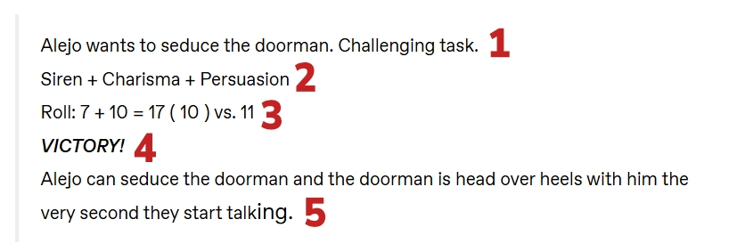
What you need to read and understand from here:
- The action that my character will take.
- The dice roll that I will make with the respective dice for each Trait.
- The results of the roll.
- Victory check.
- The resul of the action.
Simple and Effective
While the book has tons of other options to adapt any sort of genre into the game, I will refrain from using any of those mods for now, as I want to keep the experience as streamlined as simple as I can. My intention is to create an easy yet unique experience, where each character feels different even if they are using the same dice rolls.
So let's see how each character is composed.
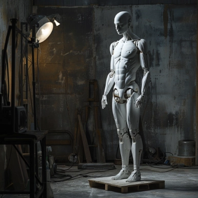
All Characters
All characters are constructed with three main Traits:
- Attributes, which represent what they can do because of their human shape.
- Skills, which represent what they know how to do and are closely linked to their life story and experiences.
- Distinctions, which represent what makes the character unique.
Besides those three traits, all characters also have specific advantages that come with their own splat. These explain further the capabilities and limitations of their respective groups and who they are within them. They will also come with their powers, which are divided into columns and specifically explain the extent and limits of their abilities. Each splat has its own weaknesses and break points, which will be further explained in the following paragraphs.
Finally, all characters have an assets screen. On the left side are compiled all of their personal Talents or Signature Assets that cannot be transferred and are part of their identity. On the right side are all the assets that have been gained because of their backstory and add a little flavor to the drama. Some are even there to help other writers find an entry point with my characters.
Let's see how each splat works.
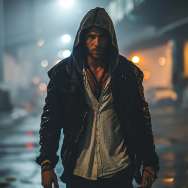
Mages
- Mages come with an extra attribute called Areté. This attribute allows them to cast magic.
- Magic is the ability to enact their will upon the world by changing reality according to their wishes. To do so, all Mages are equipped with a Focus, which explains how they conceive magic and why they use it (Paradigm), how they act upon the world (Practices), and what they use to convey said action on the world (Paraphernalia). These are all dramatic.
- The limits of their magic are set by the Spheres, which are the realms of influence they can have upon the universe. There are nine Spheres, and all Mages have at least four of them.
- The roll to cast magic is composed of their Paradigm (part of the Distinctions), their Areté, and the Sphere of action.
- The Spheres come with Special Effects that can be activated on the roll, as long as the condition is met.
- A hitch on a magical roll imposes a magical damage called Paradox, which is the result of trying to move the universe in their favor and the universe not favoring said move. Dramatically, it manifests as excruciating pain that numbs the character, may cause them to bleed, or even discharge contained energy within them.
- Affinity with a specific Sphere means that hitches on that Sphere can be rerolled without suffering penalties or creating further issues.
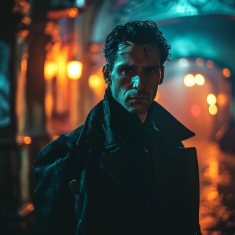
Vampires
- Vampires come with an extra attribute called Potency. This attribute represents the potency of their blood and their Generation.
- Vampires are condemned because the Blood of Caine has been given to them, condemning them to a life of eternal damnation, as they are all ridden by the Beast—God's curse upon Caine, now passed to their spawn. The Beast demands to be sated through blood.
- By using the powers of their blood, they can call upon Disciplines, which grant them Powers to use. These are the powers that most legends reference when speaking of vampires.
- In order to use their Powers, they need to roll their Predator, plus the Potency of their blood, and the Attribute they are affecting.
- Their Disciplines come with Special Effects that can be activated on the roll, as long as the condition is met.
- A hitch on any roll represents that the Beast is hungry and now requires blood. While this is entirely dramatic, it will be evident that the vampire needs blood to continue acting, and any display of blood will make them turn feral.
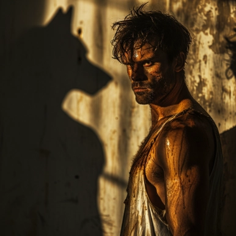
Werewolves
- Werewolves have four different shapes besides human. Each shape grants them specific limits and powers. They do not need to do anything other than be described in the thread as changing. The new SFX are activated as long as they remain in that shape.
- Werewolves come with an extra attribute called Renown. This attribute represents the renown that Spirits know them for and the reason why they can call upon their powers.
- In World of Darkness, Werewolves are Gaia's chosen warriors. Half spirit, half human, they possess a wolf spirit within them that allows them to change shape. The Wolf, however, is full of pent-up Rage due to the mistreatment of the world and their fellow humankind.
- Werewolves receive Gifts from the Spirits they commune with in the fight to save the Earth. These Spirits grant them abilities they possess: the spirit of an ant could bring them superstrength, while the spirit of a raccoon might allow them to walk unnoticed.
- In order to use their Gifts, they need to roll their Patron, plus the Renown of their blood, and the Attribute they are affecting.
- Their Gifts come with Special Effects that can be activated on the roll, as long as the condition is met.
- A hitch on any roll represents that the Rage has now increased. Depending on the context, it may drive them into Frenzy or be demonstrated by frustration and fury that cannot be calmed and is evident in their actions.
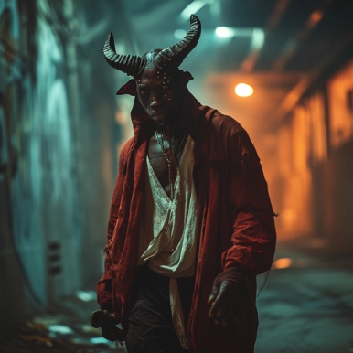
Changelings
- Two identities living in one body. Changelings have both a Civic identity and a Fae identity. When dealing with regular humans, they use their Civic identity, which is nothing but a mask, as they know their real identity is the Fae one.
- Changelings come with an extra attribute called Arts. This attribute represents the power they have to alter the world by forcing the Dreaming to overlay mundane reality.
- Changelings are both human and dream living in the same husk. To those who can see them, their Chimerical Seeming is visible: large horns, wings, or a small stature—their physical shape changes for those who have not lost the ability to dream.
- Changelings are a living piece of the Dreaming, the dimension from which all dreams come and that is formed by the hopes and emotions of all mankind. But as mankind strays from its illusions and hopes, the Autumn manifests, harming the Fae, who use their human side as a husk to withstand the waves of Banality.
- As such, they have the ability to bring forth the Dreaming through their Cantrips, which are rolled using the attribute Arts, their Seeming distinction, and a Skill.
- Their Arts come with Special Effects that can be activated on the roll, as long as the condition is met.
- A hitch on any roll represents that the Banality has increased. The energy that powers them is now low, and the Autumn is here to harm them and wither everything within them.
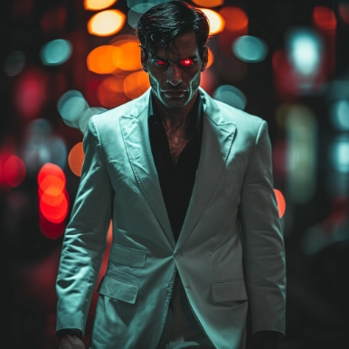
Demons
- Two identities living in one body. At one point, they were Elohim, the Angels that constructed the Universe in seven days until they rebelled against the Heavenly Host for a variety of reasons. Defeated, they were tossed into the Abyss until recently, when the seal on it broke and some of them were able to escape their confinement.
- Demons come with an extra attribute called Faith. This attribute represents the belief their liege humans had set upon them, which powers them to change the world.
- Demons are both human and angel, living in the same husk. Others like them can detect them easily, for their Heavenly Name is plastered on everything they touch, but regular humans don’t see them unless they decide to reveal their Visage, a mere fraction of their materialized Glory of days past. When they do so, they materialize their Celestial Body, if only for brief periods of time.
- Like Werewolves, they have the ability to change to their Visage without cost. However, it drives any humans who are not part of the World of Darkness into a trance, enraptured by the Grace of the Heavens, and they can then use the extra abilities added to the rolls.
- A secondary shape is given to them, called their Tormented Visage. After years in the Abyss, their Grace has been contaminated by the horrors of the Underworld, which manifest in horrific ways. Elohim have the ability to activate either.
- They were once connected with God and the Heavenly Host until they were cast into the Abyss. At that point, where Spirit and Flesh had no barriers, it was easy for them to manifest. But in this day and age, they require a body to serve as a husk to navigate the world. Other Demons and Exorcists are a threat to them, as they possess the means to harm their Celestial Body.
- As such, they have the ability to redo Creation through the use of their Lores, which affect the very components of how the Universe was created. It goes beyond mere magic, as this skill allows them to rewrite the world. Lore is rolled using the attribute Faith, their Virtue distinction, and a Skill.
- Their Lores come with Special Effects that can be activated on the roll, as long as the condition is met.
- A hitch on any roll represents a lack of Faith that affects them. The energy that propels them is lost, and they will need to recharge if they wish to continue using their Lores.
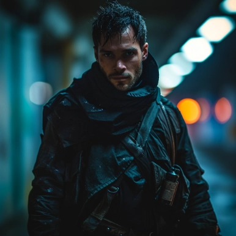
Hunters
- Mankind's only defense against the Night. They have experienced firsthand the claws and the fangs, and they have made it their life’s work to stop the Night from advancing, no matter the odds.
- Hunters come with an extra attribute called Desperation. This attribute represents the frustrating desire to change the world and to stop the advance of the Night Folk, granting them strength in their direst moments.
- Hunters are all humans with a Creed, which defines how they approach the fight. And because this is something they believe in, they receive extra aid in specific rolls, adding their Desperation attribute to these rolls.
- They were all victims, or know someone close to them who was a victim of the Night Folk. This fills them with both dread and hope to keep going, which manifests as their Drive.
- They do not possess special abilities to combat the World of Darkness, but they do possess Edges and Perks, which grant them special effects to roll under certain conditions. Some of them are purely dramatic and offer a convenient excuse to plot.
- A hitch on any roll represents that the danger has grown. Somehow, the stakes have risen and they are in a pinch from which they need to pull back. Dramatically, it represents a major problem that manifests in the writing and must be solved before the thread is closed.
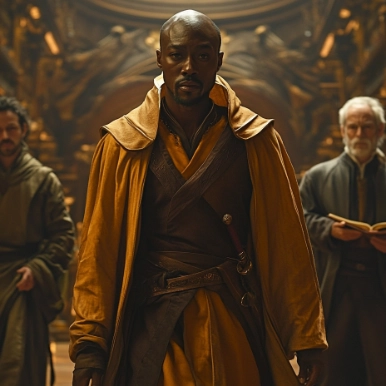
CAN’T YOU JUST WRITE LIKE ALL THE OTHER RPERS? ISN’T THIS A BIT TOO MUCH?
Yeah. Maybe. But I have found that leaving the result of an action to luck can be quite creative. It allows me to create new problems to keep the thread fresh and to find new solutions on the spot. Because that is precisely what makes this fun!
To me, roleplaying is about finding a creative solution, and by providing possible problems with each solution, we keep the thread moving and away from stalling.
As always, these are rules that I stick to. You are free to follow them or ignore them. And if you have questions about them, feel free to reach out to me through DM—I’ll be happy to explain!